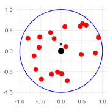
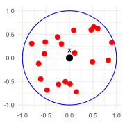

Stat 406
Geoff Pleiss, Trevor Campbell
Last modified – 08 October 2024
\[ \DeclareMathOperator*{\argmin}{argmin} \DeclareMathOperator*{\argmax}{argmax} \DeclareMathOperator*{\minimize}{minimize} \DeclareMathOperator*{\maximize}{maximize} \DeclareMathOperator*{\find}{find} \DeclareMathOperator{\st}{subject\,\,to} \newcommand{\E}{E} \newcommand{\Expect}[1]{\E\left[ #1 \right]} \newcommand{\Var}[1]{\mathrm{Var}\left[ #1 \right]} \newcommand{\Cov}[2]{\mathrm{Cov}\left[#1,\ #2\right]} \newcommand{\given}{\ \vert\ } \newcommand{\X}{\mathbf{X}} \newcommand{\x}{\mathbf{x}} \newcommand{\y}{\mathbf{y}} \newcommand{\P}{\mathcal{P}} \newcommand{\R}{\mathbb{R}} \newcommand{\norm}[1]{\left\lVert #1 \right\rVert} \newcommand{\snorm}[1]{\lVert #1 \rVert} \newcommand{\tr}[1]{\mbox{tr}(#1)} \newcommand{\brt}{\widehat{\beta}^R_{s}} \newcommand{\brl}{\widehat{\beta}^R_{\lambda}} \newcommand{\bls}{\widehat{\beta}_{ols}} \newcommand{\blt}{\widehat{\beta}^L_{s}} \newcommand{\bll}{\widehat{\beta}^L_{\lambda}} \newcommand{\U}{\mathbf{U}} \newcommand{\D}{\mathbf{D}} \newcommand{\V}{\mathbf{V}} \]
We’ve been discussing nonlinear methods in 1-dimension:
\[\Expect{Y\given X=x} = f(x),\quad x\in\R\]
\[\hat f_\mathrm{basis}(x) = \beta_0 + \beta_1 x + \beta_2 x^2 + \cdots + \beta_k x^k\]
\[\hat f_\mathrm{local}(x_i) = s_i^\top \y\]
Which should we choose?
Of course, we can do model selection. But can we analyze the risk mathematically?
\[ R_n = \mathrm{Bias}^2 + \mathrm{Var} + \sigma^2 \]
How does \(R_n^{(\mathrm{basis})}\) compare to \(R_n^{(\mathrm{local})}\) as we change \(n\)?
\[ R_n^{(\mathrm{basis})} = \underbrace{C_1^{(\mathrm{basis})}}_{\mathrm{bias}^2} + \underbrace{\frac{C_2^{(\mathrm{basis})}}{n}}_{\mathrm{var}} + \sigma^2 \]
With the optimal bandwidth (\(\propto n^{-1/5}\)), we have
\[ R_n^{(\mathrm{local})} = \underbrace{\frac{C_1^{(\mathrm{local})}}{n^{4/5}}}_{\mathrm{bias}^2} + \underbrace{\frac{C_2^{(\mathrm{local})}}{n^{4/5}}}_{\mathrm{var}} + \sigma^2 \]
Important
you don’t need to memorize these formulas but you should know the intuition
The constants don’t matter for the intuition, but they matter for a particular data set. You have to estimate them.
How do local methods perform when \(p > 1\)?
Parametric multivariate regressors (e.g. basis expansions) require you to specify nonlinear interaction terms
e.g. \(x^{(1)} x^{(2)}\), \(\cos( x^{(1)} + x^{(2)})\), etc.
Nonparametric multivariate regressors (e.g. KNN, local methods) automatically handle interactions.
The distance function (e.g. \(d(x,x') = \Vert x - x' \Vert_2\)) used by kernels implicitly defines infinitely many interactions!
This extra complexity (automatically including interactions, as well as other things) comes with a tradeoff.
Consider \(x_1, x_2, \ldots, x_n\) distributed uniformly within a \(p\)-dimensional ball of radius 1. For a test point \(x\) at the center of the ball, how far away are its \(k = n/10\) nearest neighbours?
(The picture on the right makes sense in 2D. However, it gives the wrong intuition for higher dimensions!)

Let \(r\) the the average distance between \(x\) and its \(k^\mathrm{th}\) nearest neighbour.
Distance becomes (exponentially) meaningless in high dimensions.*
*(Unless our data has “low dimensional structure.”)
Assuming optimal bandwidth of \(n^{-1/(4+p)}\)…
\[ R_n^{(\mathrm{OLS})} = \underbrace{C_1^{(\mathrm{OLS})}}_{\mathrm{bias}^2} + \underbrace{\tfrac{C_2^{(\mathrm{OLS})}}{n/p}}_{\mathrm{var}} + \sigma^2, \qquad R_n^{(\mathrm{local})} = \underbrace{\tfrac{C_1^{(\mathrm{local})}}{n^{4/(4+p)}}}_{\mathrm{bias}^2} + \underbrace{\tfrac{C_2^{(\mathrm{local})}}{n^{4/(4+p)}}}_{\mathrm{var}} + \sigma^2. \]
The previous math assumes that our data are “densely” distributed throughout \(\R^p\).
However, if our data lie on a low-dimensional manifold within \(\R^p\), then local methods can work well!
We generally won’t know the “intrinsic dimensinality” of our data though…
You can’t just compare the GCV/CV/etc. scores for basis models versus local kernel smoothers.
You used GCV/CV/etc. to select the tuning parameter, so we’re back to the usual problem of using the data twice. You have to do another CV to estimate the risk of the kernel version once you have used GCV/CV/etc. to select the bandwidth.
Compromises if p is big
Additive models and trees
UBC Stat 406 - 2024